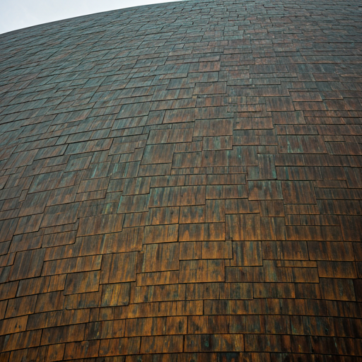

Heritage Status
National Heritage List since 2005. Recognised as a monument of structural history.
 AT RISK: CONSERVATION PRIORITY
AT RISK: CONSERVATION PRIORITY
Acton, Canberra ACT
A copper-clad landmark of Australian mid-century modernism, challenging the boundaries of structural engineering and architectural form since 1959.
Designed by Sir Roy Grounds, the Australian Academy of Science building represents the pinnacle of "Space Age" architecture in the Southern Hemisphere. Its iconic 710-tonne concrete dome is held up by sixteen massive arched supports submerged in a surrounding moat.
Beyond its technical bravura, it symbolises Canberra's identity as a city of science, progress, and post-war modernist vision. It is more than a building; it is a declaration of Australian intellectual ambition in the post-war era.
National Heritage List since 2005. Recognised as a monument of structural history.
Securing long-term funding for copper restoration and climate controls appropriate for the local structure.
Join our monthly events to learn about this building's unique heritage and ongoing conservation story.

Your participation directly funds the restoration of Canberra's unique modernist fabric.
Support Now